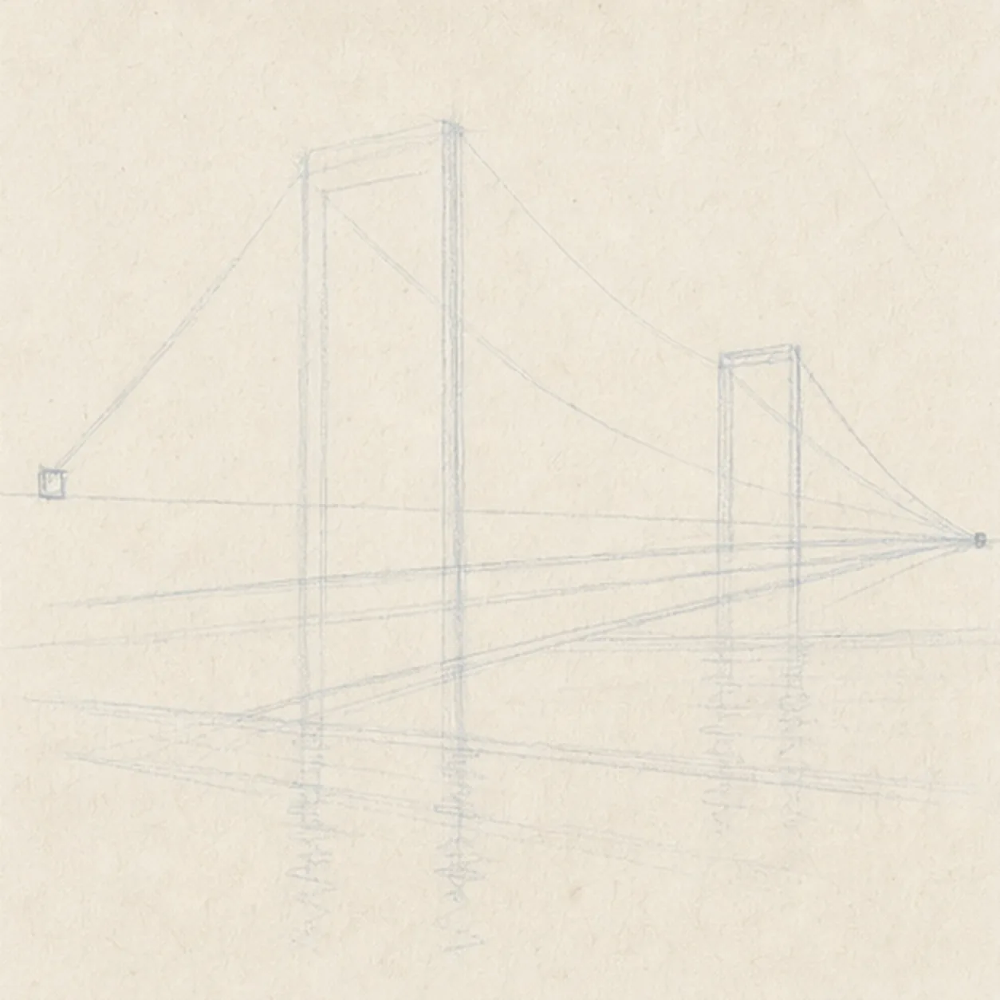
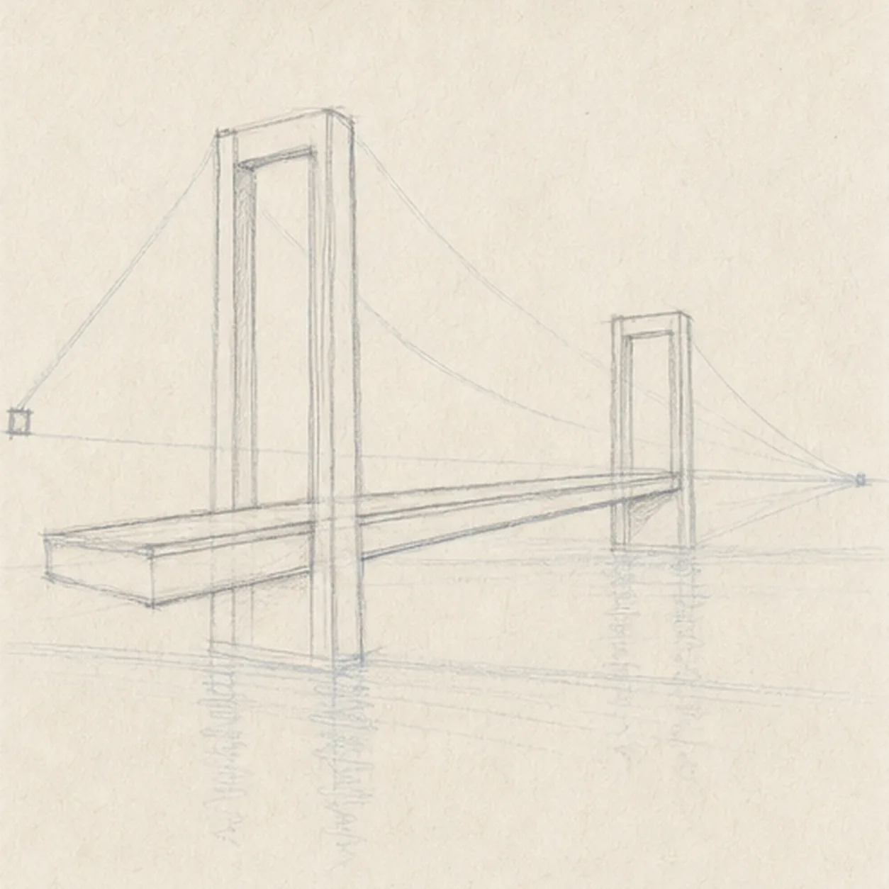
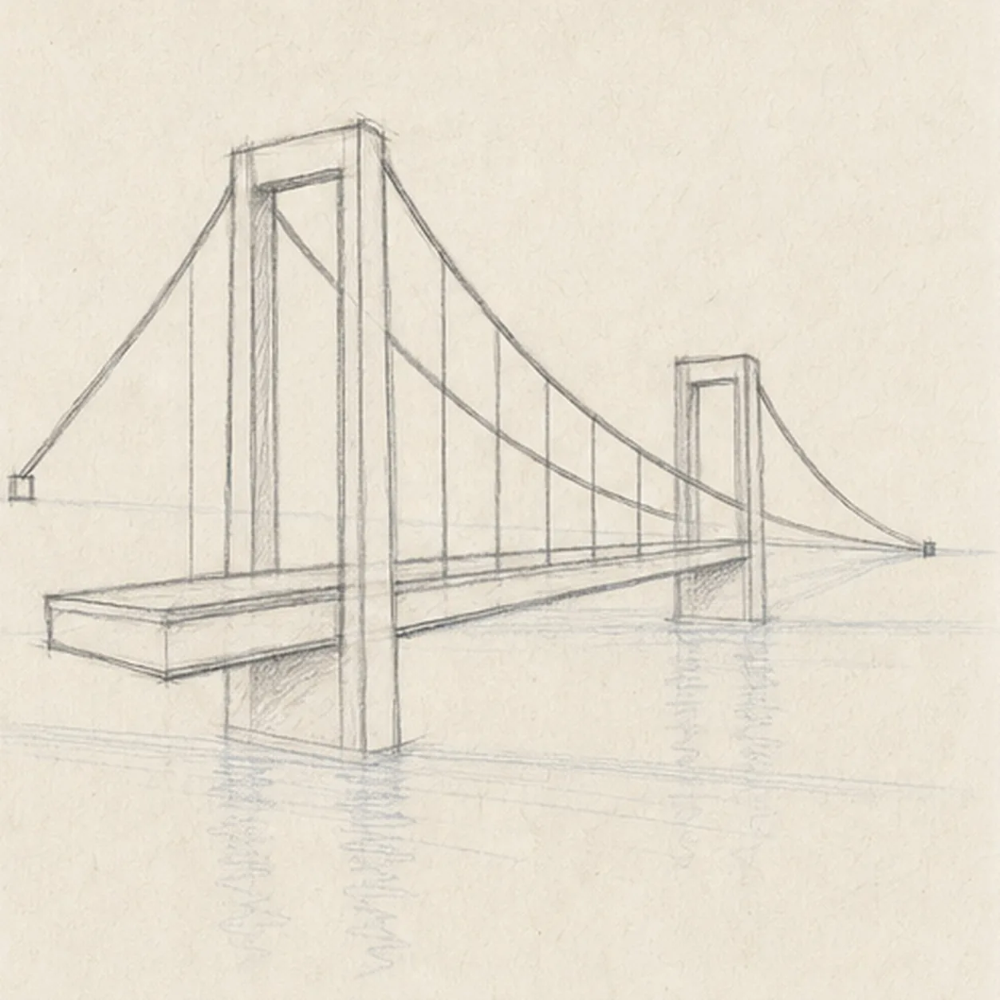
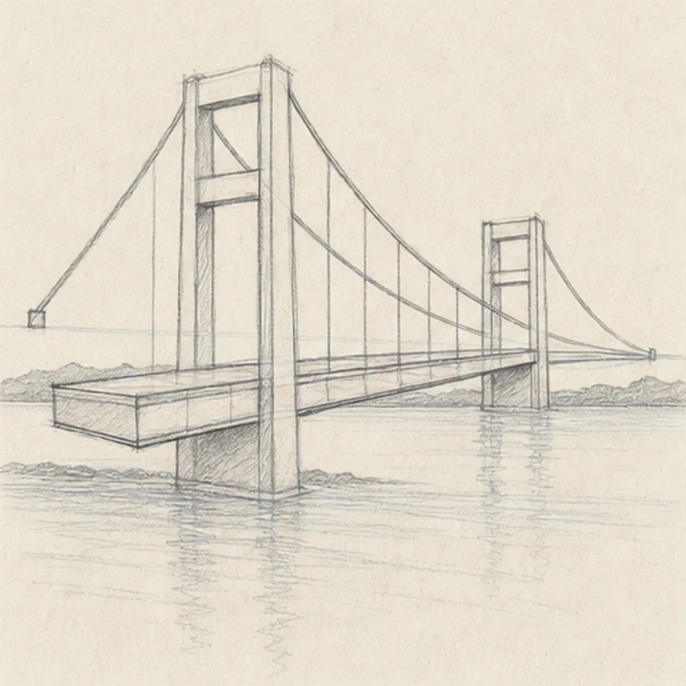
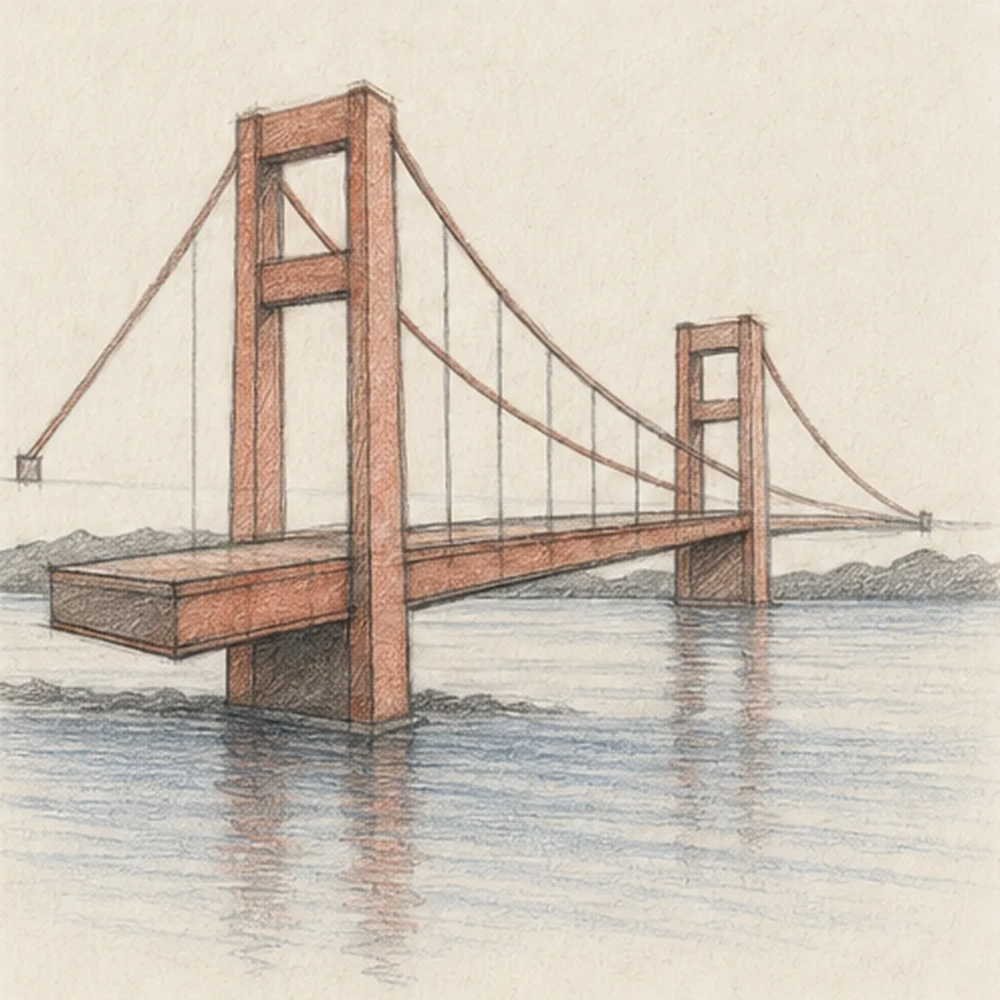

From the archive
Let's draw a suspension bridge in perspective
Treat this as one small practice round: build the subject lightly, notice the shapes, then darken only the lines that help the finished sketch.
-
01

Set the bridge perspective
Draw a pale horizon and mark a vanishing point on the right. Aim a deck wedge toward it, place two tower boxes across that wedge, then map two cable arcs, both anchors, the distant shoreline, broad water guides, and a broken reflection footprint.
Sketch tip: Ghost the deck edges from left to right before touching down, then compare the empty wedges above and below the deck. Keep every long receding line aimed at the same point even if the final stroke stays pleasantly imperfect.
-
02

Build towers and deck
Wrap the guides with two complete rectangular portal towers, the receding deck, both rail edges, and the two cable anchor points while leaving the cable arcs pale.
Sketch tip: Draw the near tower first, then use its top and crossbar angles to size the far tower. Squint at the negative spaces inside both portals; they should feel related even though perspective makes the far one smaller.
-
03

Hang the cables
Pull two smooth main cable arcs through the tower tops and anchors, then add a clear rhythm of vertical suspender lines from the established cables down to the deck.
Sketch tip: Ghost each main cable from the shoulder and draw it in one relaxed pass. For the suspenders, start at the deck and stop exactly at the cable so the repeated lines feel attached instead of floating.
-
04

Add structure and water
Add tower crossbars, a few deck seams, the low shoreline shapes, broad calm water bands, and one broken reflection beneath the bridge.
Sketch tip: Rotate the page for the short crossbars, then keep shoreline and water marks broken where the solid towers and deck cover them. Wider gaps in the reflection will make the water read better than a dark mirrored copy.
-
05

Shade the span
Layer graphite along the established bridge structure, add restrained rust-red pencil to the towers, deck, and cables, blue-gray pencil to the water, and preserve open paper highlights on cables and ripples.
Sketch tip: Pull shading strokes along each structural member and follow the water horizontally. Leave narrow paper gaps between passes so the colored pencil keeps the tooth and does not turn into a smooth digital fill.
-
06

Finish the suspended span
Strengthen selected keeper lines, deepen the established graphite and colored-pencil values, clarify the open-paper highlights, and soften only the perspective guides that distract.
Sketch tip: Trace both cable routes from anchor to anchor, then check that every suspender reaches the deck and both towers still share the same perspective. Stop while pale construction and paper grain remain visible; your cable spacing and colors can vary without changing the bridge logic.

![Handmade graphite and restrained colored-pencil sketch of one left-facing muted-ochre seahorse with one horse-like head and long snout, one three-point crown ridge, one visible eye, one arched neck and rounded belly, one tapering clockwise-curled tail wrapped exactly once around one teal-green eelgrass stem, one ribbed dorsal fin, exactly two small side fins, exactly seven curved torso plates, exactly five narrow eelgrass leaves, exactly two pale-blue bubbles, exactly two open-paper highlights, visible paper tooth, and one broken cool-gray ground shadow](../assets/seahorse-curled-around-eelgrass-finished-v1.webp)